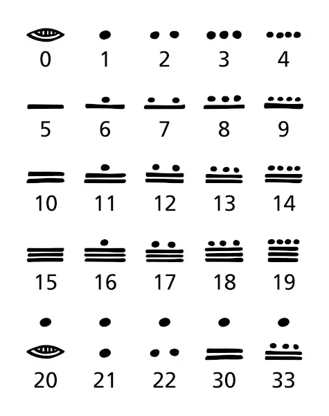
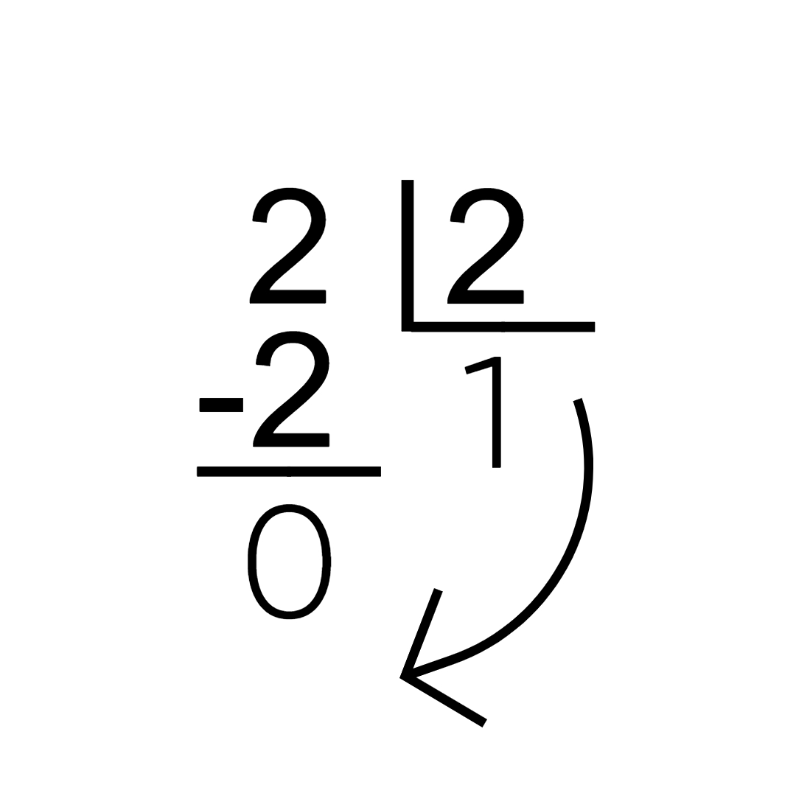

As bases numericas server para organizar a contagem e a matemática de uma sociedade. Nós, atualmente, utilizamos a base numérica com 10 digitos. Porém, em diferentes lugares e em diferentes tempos, as pessoas utilizam sistemas de numeração e bases de numeração diferentes. Por exemplo, a sociedade maia utiliza um sistema de base vigesimal, ou seja, possui 20 digitos.
|  |
A base numérica que é mais utilizada é a base decimal (a que nós utilizamos), justamente pelo fato de haverem 10 dedos nas mãos. E é esse mesmo motivo que leva às outras bases, temos 5 dedos em uma mão/um pé (base quinta/ 5) e temos 20 dedos ao total (base vigesimal/ 20). Nós utilizamos um número pequenino embaixo do valor que estamos trabalhando para representar a base do número. Ex.: (10)10 mostra que o número 10 está em um valor decimal.
O uso das diferentes bases numéricas são de grande importância para qualquer pessoa que trabalha com Informática, pois utilizamos diferentes bases para realizarmos trabalhos como armazenamento de informações dentro de bits, escrita de código e expressões Booleanas. A base Binária é a simple e é a melhor para trabalhar com expressões Booleanas, a base Octal possui as funções da Binária emm um nível de complexidade elevado e a base Hexadecimal é a melhor para guardar múltiplas informações.
A base binária, como o nome já diz, é um sistema de dois digitos, 0 e 1. Essa base é utilizada para realizarmos expressões Booleanas. Cada casa de unidade do sistema binário é uma potência de 2, do mesmo modo que cada casa de unidade do sistama decimal é uma potência de 10.
| ....Unidade de Milhão | Centena de Milhar | Dezena de Milhar | Unidade de Milhar | Centena | Dezena | Unidade | ||
|---|---|---|---|---|---|---|---|---|
| (Base Decimal)10 | Potenciação | ....106 | 105 | 104 | 103 | 102 | 101 | 100 |
| Número | ....1000000 | 100000 | 10000 | 1000 | 100 | 10 | 1 | |
| (Base Binária)10 | Potenciação | ....26 | 25 | 24 | 23 | 22 | 21 | 20 |
| Número | ....64 | 32 | 16 | 8 | 4 | 2 | 1 | |
| (Base Binária)2 | Potenciação | ....106 | 105 | 104 | 103 | 102 | 101 | 100 |
| Número | ....1000000 | 100000 | 10000 | 1000 | 100 | 10 | 1 | |
Quando trabalhamos com uma base numérica (N)10, (10)N = (N)10. Por exemplo, (10)2 = (2)10. Dessa maneira, podemos entender que as casas de unidades x (10x) na base binária são iguais a (2x)10. Então podemos começar a entender como converter números binários para números decimais
Pegue, por exemplo, o número (100101)2, com este número, e com qualquer outro número da base 2, podemos pegar a quantidade de 1s e 0s e múltiplicar por 2x. Se fizermos isto na base 2, o número voltará ao 'normal', 1 * 105 + 1 * 102 + 1 * 100; já se fizermos essa equação na base 10, teremos a conversão 'correta' 1 * 25 + 1 * 22 + 1 * 20 = 32 + 4 + 1 = (37)10
Alguns outros exemplos finais:
| Binário | Decimal |
|---|---|
| 1010 → | 23 + 21 = 10 |
| 111000 → | 25 + 24 + 23 = 56 |
| 1000000001 → | 29 + 20 = 513 |
| 111111111111111 → | 215 - 1 = 32.767 |
Agora, já sabemos como converter um número binário para decimal, mas e se precisarmos fazer o contrário?
Se a conversão de binário para decimal é, em grande parte, multiplicação, a conversão inversa deve ser sobre múltiplas divisões.
Para convertermos, por exemplo, o número (2)10 para a base binária, devemos fazer divisões consecutivas por 2, coletar todos os restos e oraganizá-los do último para o primeiro.
|  |
| ↓ |
| (10)2 |